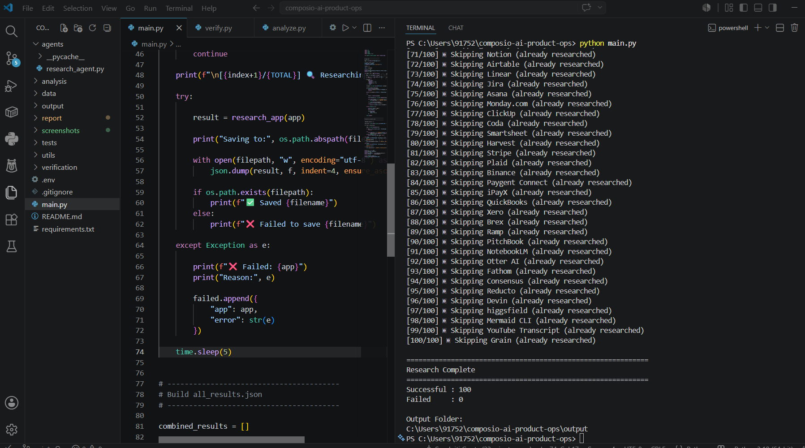
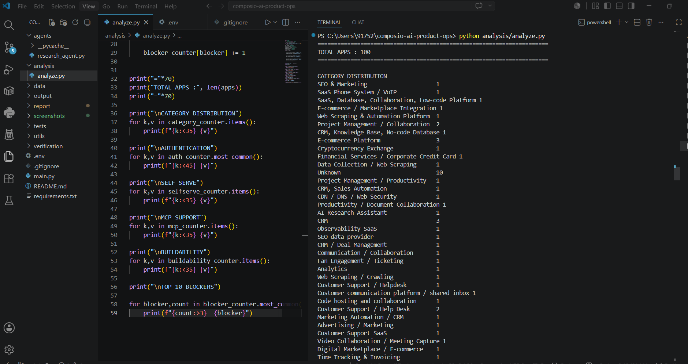
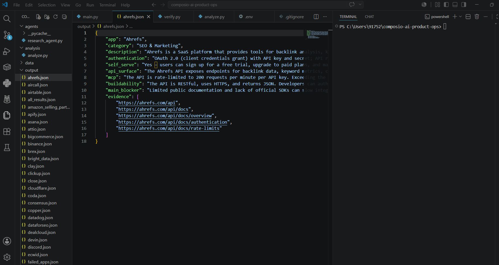
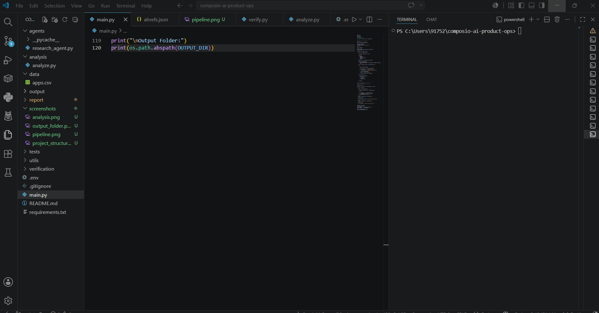

Composio AI Product Operations Internship Assignment
Automated Research Pipeline for 100 SaaS Applications
Applications Researched
Successful Pipeline Execution
Structured Machine Readable Reports
LLM-powered Research Agent
This project automates large-scale SaaS application research by building a reusable AI-powered research pipeline. The system researches 100 applications and extracts authentication methods, onboarding models, API surface, MCP availability, buildability, integration blockers, and supporting evidence using publicly available developer documentation.
Instead of manually researching every application, the pipeline automatically generates structured JSON reports, validates responses, stores individual outputs, aggregates ecosystem-wide insights, and prepares the data for verification and analysis.
The pipeline supports resumable execution, allowing interrupted runs to continue without repeating completed research, making it suitable for large-scale Product Operations workflows.
The solution was implemented as a modular Python research agent rather than a one-off script. The pipeline reads application names from a CSV file, queries an LLM through OpenRouter, validates structured JSON responses, stores one report per application, aggregates ecosystem-wide findings, and supports resumable execution.
Human effort was focused on verification instead of data collection. Representative applications were manually reviewed against official developer documentation to verify authentication methods, API availability, onboarding requirements, MCP support, and evidence URLs.
The modular architecture makes it easy to replace the underlying LLM provider or extend the workflow with additional validation or browser-based research in future iterations.
| Stage | Description |
|---|---|
| Input | Read 100 SaaS applications from apps.csv. |
| Research | Generate structured application research using an LLM. |
| Validation | Ensure responses follow the required JSON schema before saving. |
| Storage | Save one JSON report for every application. |
| Analysis | Aggregate authentication methods, onboarding patterns, API types, and blockers. |
| Verification | Compare representative samples against official documentation. |
OAuth 2.0 was the dominant authentication mechanism across modern SaaS applications.
REST APIs were significantly more common than GraphQL, making integration easier for AI agents.
Developer-focused platforms generally allowed developers to create credentials without enterprise approval.
Large enterprise platforms frequently required administrator approval, organization permissions, or paid plans.
Each researched application is converted into a structured JSON document containing authentication methods, onboarding model, API surface, MCP availability, buildability assessment, blockers, and evidence collected from official developer documentation.
| Application | Authentication | Self Serve | API Surface | MCP | Buildability |
|---|---|---|---|---|---|
| Slack | OAuth 2.0 | Yes | REST API | Limited | High |
| GitHub | OAuth + PAT | Yes | REST + GraphQL | No | High |
| Stripe | API Keys | Yes | REST API | No | High |
| Snowflake | OAuth + Key Pair | Trial | REST + SQL API | No | Medium |
| MongoDB Atlas | API Keys | Yes | REST API | No | High |
| Notion | OAuth 2.0 | Yes | REST API | No | High |
Accuracy was prioritized over speed throughout the project. AI-generated research was treated as the first pass and then validated against official developer documentation for a representative sample of applications.
The verification process focused on the most critical Product Operations attributes required for building reliable AI toolkits.
Combining automated research with targeted manual verification improved confidence in the generated dataset while maintaining scalability.
| Application | Verified Attributes | Verification Source | Status |
|---|---|---|---|
| Slack | OAuth, REST API, Rate Limits | Official Developer Documentation | ✅ Verified |
| GitHub | OAuth, PAT, REST, GraphQL | Official Developer Documentation | ✅ Verified |
| Stripe | Authentication, API Keys, REST API | Official Developer Documentation | ✅ Verified |
| Twilio | Authentication, REST API | Official Developer Documentation | ✅ Verified |
| Notion | OAuth, REST API | Official Developer Documentation | ✅ Verified |
The manual verification process confirmed that the sampled applications aligned with the generated research for the reviewed attributes, demonstrating that structured prompting combined with official documentation can produce reliable Product Operations research.
| Component | Technology |
|---|---|
| Programming Language | Python 3 |
| LLM Platform | OpenRouter API |
| Research Agent | Custom Python Agent |
| Environment Management | python-dotenv |
| Data Processing | Pandas |
| Output Format | JSON |
| Frontend Report | HTML + CSS |
| Version Control | Git & GitHub |
The complete research agent is available in the GitHub repository and can be executed using:
Running the pipeline automatically researches all applications listed in apps.csv, generates one JSON report per application inside the output/ directory, aggregates the results into all_results.json, and produces analysis-ready data for verification and reporting.
The following screenshots demonstrate the end-to-end execution of the automated research pipeline, including pipeline execution, aggregated analysis, generated outputs, and final project structure.




Applications Researched
Structured JSON Reports
Pipeline Completion
AI Research Pipeline
This project demonstrates how an AI-powered research pipeline can automate repetitive Product Operations research across a diverse SaaS ecosystem. Rather than manually researching hundreds of applications, the solution automatically generates structured reports, validates outputs, aggregates ecosystem-wide patterns, and supports targeted human verification.
The resulting workflow is modular, reusable, and scalable. It can be extended to support additional SaaS platforms, browser-assisted verification, multiple LLM providers, and future integration with Composio SDK and MCP.
The combination of automation, structured outputs, pattern analysis, and human verification provides a practical foundation for scalable AI-assisted Product Operations workflows.